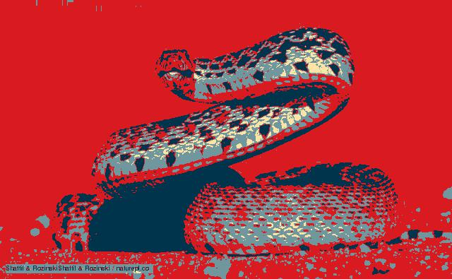
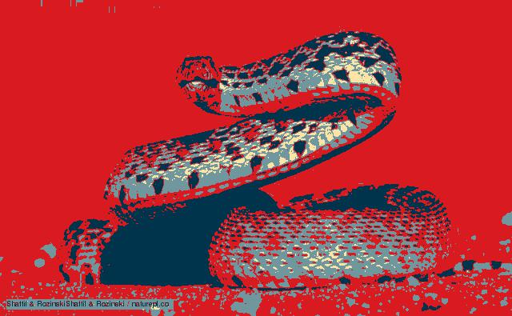

Hi. :-) I was born in San Jose and have been living in Gilroy since 2007. I went to Canoas, El Roble, Brownell, & G. E. C. A. I won second place in a bridge competition in my freshman year and second place in Daze of Code in my sophomore year. I am looking forward to winning second place again, if not first or third place in this upcoming competition for my junior year.
I don't like pickles or barbeque. Sometimes I like ketchup; I love spicy food and spicy condiments.
The top half of both of my ring fingers are curved backwards.
I love interpreting my dreams, so I use this link very often to do so: https://www.dreamscloud.com/
This summer, I am focused in Girls Who Code, which is a summer immersion program to teach girls briefly how to code. We started with Scratch the first week; on our second week, we moved on to HTML and python.
Manuela Veloso and Ayanna Howard both design robots that need agents that will allow them to interact with complex environments, so they need their robots to be better at making decisions.
Today my team and I learned to program a robot to flash a LED light. We worked well together by sharing the materials, but I feel that we needed to do a better job at sharing the robot.